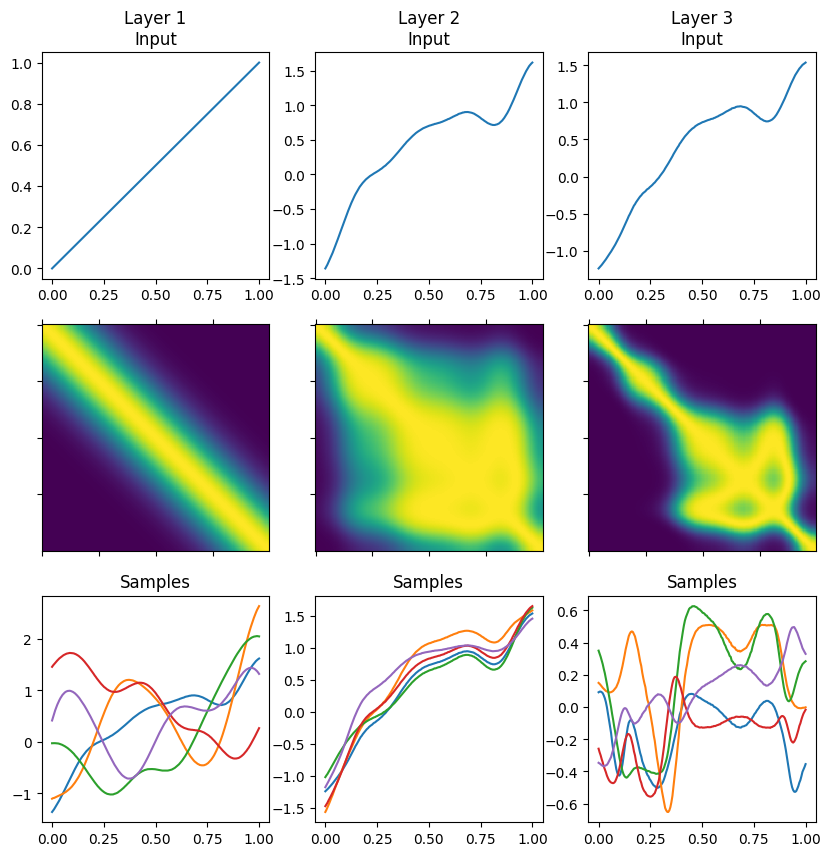

Deep GP samples#
To help develop a more intuitive understanding of deep Gaussian processes, in this notebook we show how to generate a sample from the full deep GP, by propagating a sample through the layers.
[1]:
import matplotlib.pyplot as plt
import numpy as np
import tensorflow as tf
import gpflow
from gpflux.helpers import construct_basic_kernel, construct_basic_inducing_variables
from gpflux.layers import GPLayer
from gpflux.experiment_support.plotting import plot_layer
tf.random.set_seed(42)
2024-06-20 12:01:05.022488: I tensorflow/tsl/cuda/cudart_stub.cc:28] Could not find cuda drivers on your machine, GPU will not be used.
2024-06-20 12:01:05.053090: I tensorflow/tsl/cuda/cudart_stub.cc:28] Could not find cuda drivers on your machine, GPU will not be used.
2024-06-20 12:01:05.053869: I tensorflow/core/platform/cpu_feature_guard.cc:182] This TensorFlow binary is optimized to use available CPU instructions in performance-critical operations.
To enable the following instructions: AVX2 FMA, in other operations, rebuild TensorFlow with the appropriate compiler flags.
2024-06-20 12:01:05.759201: W tensorflow/compiler/tf2tensorrt/utils/py_utils.cc:38] TF-TRT Warning: Could not find TensorRT
[2]:
num_data = 200
D = 1
a, b = 0, 1
X = np.linspace(a, b, num_data).reshape(-1, 1)
Constructing the layers#
Note that we give the full_cov=True argument to GPLayer so that we obtain correlated samples. We give the last layer a gpflow.mean_functions.Zero mean function (the GPflux default is an Identity mean function).
[3]:
num_samples = 5
[4]:
Z = X.copy()
M = Z.shape[0]
# Layer 1
inducing_var1 = construct_basic_inducing_variables(M, D, D, share_variables=True, z_init=Z.copy())
kernel1 = construct_basic_kernel(
gpflow.kernels.SquaredExponential(lengthscales=0.15),
output_dim=D,
share_hyperparams=True,
)
layer1 = GPLayer(kernel1, inducing_var1, num_data, full_cov=True, num_samples=num_samples)
# Layer 2
inducing_var2 = construct_basic_inducing_variables(M, D, D, share_variables=True, z_init=Z.copy())
kernel2 = construct_basic_kernel(
gpflow.kernels.SquaredExponential(lengthscales=0.8, variance=0.1),
output_dim=D,
share_hyperparams=True,
)
layer2 = GPLayer(kernel2, inducing_var2, num_data, full_cov=True, num_samples=num_samples)
# Layer 3
inducing_var3 = construct_basic_inducing_variables(M, D, D, share_variables=True, z_init=Z.copy())
kernel3 = construct_basic_kernel(
gpflow.kernels.SquaredExponential(lengthscales=0.3, variance=0.1),
output_dim=D,
share_hyperparams=True,
)
layer3 = GPLayer(
kernel3,
inducing_var3,
num_data,
full_cov=True,
num_samples=num_samples,
mean_function=gpflow.mean_functions.Zero(),
)
gp_layers = [layer1, layer2, layer3]
/home/runner/work/GPflux/GPflux/gpflux/layers/gp_layer.py:175: UserWarning: Beware, no mean function was specified in the construction of the `GPLayer` so the default `gpflow.mean_functions.Identity` is being used. This mean function will only work if the input dimensionality matches the number of latent Gaussian processes in the layer.
warnings.warn(
Propagating samples through the layers#
[5]:
layer_input = X
[6]:
means, covs, samples = [], [], []
for layer in gp_layers:
layer_output = layer(layer_input)
mean = layer_output.mean()
cov = layer_output.covariance()
sample = tf.convert_to_tensor(layer_output) # generates num_samples samples...
layer_input = sample[0] # for the next layer
means.append(mean.numpy().T) # transpose to go from [1, N] to [N, 1]
covs.append(cov.numpy())
samples.append(sample.numpy())
Visualising samples#
From top to bottom we plot the input to a layer, the covariance of outputs of that layer, and samples from the layer’s output.
[7]:
num_layers = len(gp_layers)
fig, axes = plt.subplots(3, num_layers, figsize=(num_layers * 3.33, 10))
for i in range(num_layers):
layer_input = X if i == 0 else samples[i - 1][0]
plot_layer(X, layer_input, means[i], covs[i], samples[i], i, axes[:, i])
